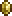

Экскалибур
Экска́либур (Excalibur) — меч, добавленный в обновлении 1.1. Для его создания требуются святые слитки.
Экскалибур являлся самым сильным мечом до версии 1.2. При использовании испускает золотой свет с такой же яркостью, как у факела.
Отличительной особенностью является возможность бить, не отпуская кнопки удара, но если Вы атакуете, то не сможете развернуться, что означает невозможность эффективно охранять две стороны сразу. Но если зацепиться крюком за какую-либо поверхность, то в таком положении можно поворачиваться во время атаки.
Также есть возможность бить по макушке стоящему далеко за спиной противнику, как у травяного или фазового меча. После выхода версии 1.2 также используется как материал для крафта Истинного Экскалибура.
Экскалибур

Характеристики
Тип Оружие Меч
Урон 72

Скорость 20 (Очень быстрая)
Атак/сек 3
Крит. шанс 4%
Отбрасывание 4.5 (Сильное)
Редкость Желтая
Продажа 5  60

Лучшая модификация Легендарный
Кол-во исследований 1 исследование
Рецепт
Рабочие места:

Мифриловая наковальня

Орихалковая наковальня
Ингридиент(ы):

Хлорофитовый слиток 24шт
Ингридиент факты
Экскалибур — легендарный меч из британского фольклора. По легенде, этот меч вручила королю Артуру Владычица озера, рука которой и держала над водой этот меч. Иногда Экскалибур отождествляют с мечом в камне (именно вытащив его из камня, Артур доказал свое право на трон), но в большинстве источников они являются разными мечами. Так же по легенде этот меч дарует власть владельцу, но при этом высасывает его жизненные силы.